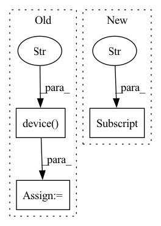

Pattern ID :1340
Before Change
// device = torch.device(f"cuda:{args.local_rank}")
// device = torch.device(f"cuda:{0}")
// torch.cuda.set_device(device)
device = torch.device("cpu" )
// train_dl, test_dl = simplified_get_train_test_dl_from_args(args, verbose=False)
is_last_partition = args.local_rank == len(configs) - 1 // FIXME
is_first_partition = args.local_rank == 0 // FIXME:After Change
dl_kw = dict()
if args.cpu:
dl_kw["pin_memory"] = False
// TODO: num workers.
dl_kw["num_workers"] = args.num_data_workers
In pattern: SUPERPATTERN
Frequency: 4
Non-data size: 3
Instances Fragment ID: 6491243
Project Name: saareliad/ftpipe
Commit Name: 643587659b515bb2181236f614f8361bda6efbb3
Time: 2019-12-01
Author: saareliad@campus.technion.ac.il
File Name: main.py
M Class Name: AnonimousClass
N Class Name: AnonimousClass
M Method Name: main(0)
N Method Name: main(0)
M Parent Class:
N Parent Class:
M File Name: main.py
N File Name: main.py
M Start Line: 332
M End Line: 378
N Start Line: 291
N End Line: 333
Before Change
if torch.cuda.is_available():
self.device = torch.device("cuda")
elif torch.backends.mps.is_available() and torch.backends.mps.is_built():
self.device = torch.device("mps" )
else:
self.device = torch.device("cpu")
else:
self.device = deviceAfter Change
// get ambient profile from AnnData.uns
if (ambient_profile is None) and ("ambient_profile_all" in raw_count.uns):
print("Found ambient profile in AnnData.uns["ambient_profile_all"]")
ambient_profile = raw_count.uns["ambient_profile_all"]
elif (ambient_profile is None) and (
"ambient_profile_all" not in raw_count.uns
):
print( Fragment ID: 6491242
Project Name: novartis/scar
Commit Name: 3e665696fca90371c5571580921855503805bab5
Time: 2023-03-02
Author: 43896555+CaibinSh@users.noreply.github.com
File Name: scar/main/_scar.py
M Class Name: model
N Class Name: model
M Method Name: __init__(11)
N Method Name: __init__(11)
M Parent Class:
N Parent Class:
M File Name: scar/main/_scar.py
N File Name: scar/main/_scar.py
M Start Line: 205
M End Line: 261
N Start Line: 206
N End Line: 278
Before Change
def __init__(self, infer_size=384, open_kernel_size=3, dilate_kernel_size=3):
super().__init__()
device = torch.device("cpu" )
model = load_jit_model(
INTERACTIVE_SEG_MODEL_URL, device, INTERACTIVE_SEG_MODEL_MD5
).eval()
self.predictor = ISPredictor(After Change
super().__init__()
model_path = download_model(
SEGMENT_ANYTHING_MODELS[model_name]["url"],
SEGMENT_ANYTHING_MODELS[model_name]["md5"] ,
)
logger.info(f"SegmentAnything model path: {model_path}")
self.predictor = SamPredictor( Fragment ID: 6491241
Project Name: sanster/lama-cleaner
Commit Name: a6aec566d963e67c17c0871dca1c89d26e1cdcaa
Time: 2023-04-06
Author: cwq1913@gmail.com
File Name: lama_cleaner/plugins/interactive_seg.py
M Class Name: InteractiveSeg
N Class Name: InteractiveSeg
M Method Name: __init__(3)
N Method Name: __init__(4)
M Parent Class: BasePlugin
N Parent Class: BasePlugin
M File Name: lama_cleaner/plugins/interactive_seg.py
N File Name: lama_cleaner/plugins/interactive_seg.py
M Start Line: 201
M End Line: 213
N Start Line: 31
N End Line: 41
Before Change
if torch.cuda.is_available():
self.device = torch.device("cuda")
else:
self.device = torch.device("cpu" )
def FeatureInteraction(self, feature):
feature = feature.reshape(feature.shape[0], -1)
After Change
// load parameters info
self.depth = config["depth"]
self.embedding_size = config["embedding_size"]
self.feature_num = config["feature_num"]
self.in_feature_num = self.feature_num * self.embedding_size
self.cross_layer_w = nn.ParameterList(
nn.Parameter(torch.randn(self.in_feature_num, self.in_feature_num)) for _ in range(self.depth)
Fragment ID: 6491240
Project Name: rucaibox/recbole
Commit Name: 51c529636f50609adb6b71d9c97440f6b2a7e3d2
Time: 2023-01-20
Author: 1194970401@qq.com
File Name: recbole/model/context_aware_recommender/kd_dagfm.py
M Class Name: CrossNet
N Class Name: CrossNet
M Method Name: __init__(2)
N Method Name: __init__(2)
M Parent Class: nn.Module
N Parent Class: nn.Module
M File Name: recbole/model/context_aware_recommender/kd_dagfm.py
N File Name: recbole/model/context_aware_recommender/kd_dagfm.py
M Start Line: 179
M End Line: 189
N Start Line: 170
N End Line: 178